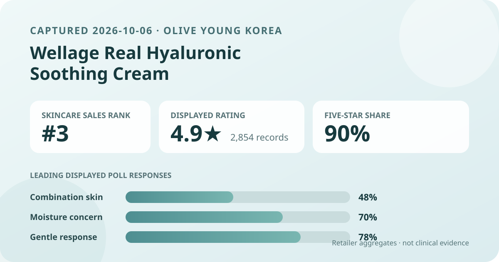
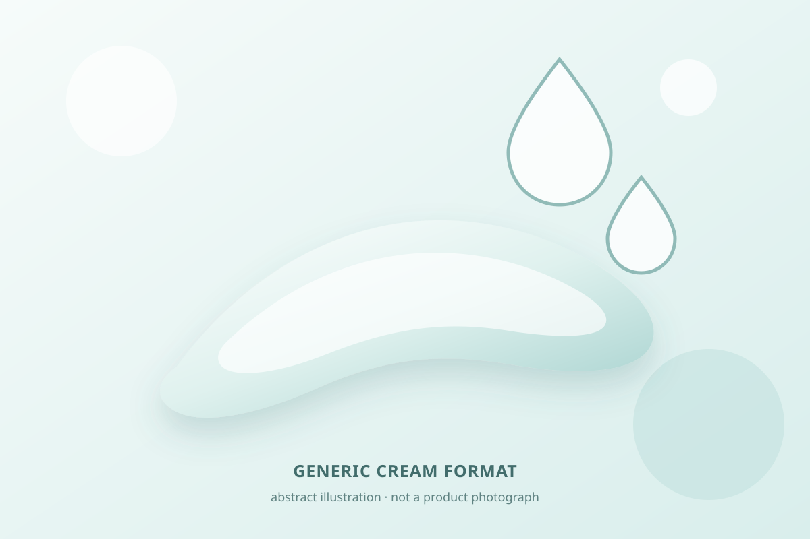

Data captured October 6, 2026. This is an independent analysis of retailer-displayed product information and anonymous aggregate review signals. I did not test the product, and no individual review, reviewer name, product photograph, or user photograph is copied or translated.

The short version: Wellage Real Hyaluronic Soothing Cream appeared at number 3 in Olive Young Korea's live skincare sales ranking. Its product header and review panel both displayed 4.9 out of 5 from 2,854 review records. The detailed view showed a 90% five-star share, while combination skin, moisture, and gentle were the leading poll responses. These are useful storefront signals, not proof of measured hydration, treatment performance, or universal tolerance.
The 4.9 average condenses 2,854 linked ratings into one rounded number. The fuller distribution adds context: 90% of displayed responses were five-star, 6% were four-star, 2% were three-star, and the one- and two-star shares were 1% each. That pattern is strongly favorable, but it is still retailer feedback rather than a controlled product test.
The five displayed shares sum to 100%, so no rounding caveat is needed for this particular chart. Even so, the interface does not establish verified-buyer composition, duration of use, application amount, routine context, campaign participation, sampling, moderation rules, or whether every reviewer evaluated the exact same promotional configuration.
The matching 2,854 total in the product header and review panel reduces the chance of accidentally pairing a current listing with a stale count. It does not make the sample representative of all purchasers or all skin conditions, markets, climates, and routines.
Combination skin was the largest captured skin-type group at 48%, followed by dry at 32% and oily at 20%. Those figures are best read as representation: they describe how respondents identified themselves inside the retailer interface. They do not prove the cream performs better for combination skin, and they do not tell us whether nonrespondents had the same profile.
Moisture led the concern poll at 70%, soothing followed at 30%, and wrinkle/brightening appeared at 1%. The rounded concern values total 101%, a normal consequence of displaying whole percentages. More importantly, these labels describe what shoppers selected; they are not corneometer measurements, changes in water loss, redness scores, wrinkle measurements, pigmentation measurements, or comparative efficacy results.
The irritation poll showed 78% gentle, 21% ordinary, and 1% felt irritation. That is favorable perception data, but it cannot predict one person's response. The page does not standardize patch conditions, diagnoses, ingredient sensitivities, concurrent products, application amounts, or exposure time. A high gentle-response share does not mean zero risk.

The captured Korean listing identifies an 80 ml soothing cream promotion with an additional 20 ml referenced in the title. That supports only a broad cream-format description. I did not dispense, spread, smell, layer, or wear the product. I cannot report its real slip, cushion, tack, absorption speed, residue, finish, compatibility with makeup, or behavior in different weather.
The local illustration is deliberately abstract and brand-neutral. It uses a pale ribbon and droplet-like shapes to communicate a general moisturizer concept without copying a product photograph, package, campaign image, or review photo. It should not be used to predict the material's actual appearance or feel.
Words such as “hyaluronic,” “soothing,” and “moisture” in a product name or retailer poll are not concentration data. They do not reveal molecular forms, formula percentages, delivery, stability, persistence, or a measured biological effect. This analysis does not infer ingredient amounts from the title or marketing language.
The retailer's automated aggregate summary classified 89% of its recent-review subset as positive. It grouped recurring discussion around a fresh or quickly settling feel, moisture impressions, and mild-feeling use. These are broad machine-generated themes from an unspecified recent subset; they are not manual coding of all 2,854 records and do not prove that every reviewer had those experiences.
This article does not reproduce, translate, or paraphrase any individual review and does not identify any reviewer. It also does not use product or user photographs. A visible review feed is ranked and selective, so a handful of individual entries would not provide a reliable estimate of how common an experience is. The analysis therefore stays with retailer-provided aggregates and anonymous grouping.
The captured header showed an 80 ml promotional listing with an additional 20 ml in the title, a ₩28,000 reference price, and a ₩17,400 promotional price. It also displayed sale, gift, delivery, and traffic information. Offers, stock, gifts, coupons, option prices, and shipping terms can change, so this is a dated Korea-store snapshot rather than a permanent value claim.
Rank three means this listing occupied the third position inside the selected Olive Young Korea skincare sales list at capture time. It does not mean third-best moisturizer by efficacy, third-most reviewed, or third-safest. Promotion, bundle structure, price, placement, stock, season, and current demand can all affect sales rank.
This analysis did not independently capture and reconcile a complete current ingredient list for every option, package, or market. No ingredient concentration, stability, penetration, compatibility, or therapeutic effect is estimated from the product name, category, price, rating, polls, anonymous themes, or ranking position.
No claim is made that the item is fragrance-free, alcohol-free, oil-free, non-comedogenic, hypoallergenic, pregnancy-compatible, procedure-compatible, or appropriate for eczema, rosacea, acne, infection, broken skin, or another medical concern. Check the current authorized label for ingredients, directions, cautions, intended use, and storage. For a diagnosed condition, recent procedure, prescription routine, or history of severe reactions, consult a qualified clinician or pharmacist.
The captured product header and review panel both displayed 4.9 out of 5 from 2,854 linked records. That is a strong retailer signal, but it does not establish clinical effectiveness or fit for one person.
Combination skin led the captured poll at 48%, followed by dry at 32% and oily at 20%. The values describe representation in the response pool rather than a suitability ranking.
No. It is an aggregate perception response with an unspecified denominator. Individual ingredients, conditions, routines, and exposures differ, and a retailer poll cannot predict personal tolerance.
It proves only that moisture was the leading label in the captured concern poll. It does not quantify hydration, duration, barrier change, or comparative performance.
No. It is a local, brand-neutral visual for a general cream concept. It does not reproduce the product or predict its real texture, color, scent, finish, ingredients, or behavior.
Source: Olive Young Korea product listing for the Wellage Real Hyaluronic Soothing Cream 80 ml promotional configuration, accessed October 6, 2026. The source is a dynamic retail page; rank, price, availability, gifts, counts, percentages, and themes can change after capture.
This independent article is unaffiliated with Wellage or Olive Young. The store link contains no affiliate tracking identifier, and this site earns no commission from it.
← Back to all posts · Review-volume rankings · Skin-poll representation · Methodology